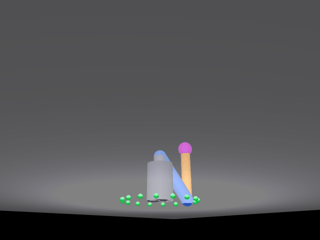

三自由度机械臂空间螺旋线仿真
本页对应 src/chap8/mujoco_arm_3d：一台三自由度机械臂（肩方位 yaw + 肩俯仰 shoulder + 肘俯仰 elbow），
末端在三维空间沿圆柱螺旋线运动（水平画圆 + 垂直匀速上升），
程序用解析空间逆运动学实时解算三个关节角，逐帧渲染后直接写出本页配图。
环境与可复现性
本页数值来自两套实跑环境：Windows 11 + Python 3.11 + MuJoCo 3.17.0，
以及 Ubuntu 22.04.5 + Python 3.12.11 + MuJoCo 3.17.0（无独立显卡，MUJOCO_GL=glfw + Xvfb）。
版本表见 §3.1，命令与终端输出见 §3.2–§3.3。

动图由 main.py 的离屏渲染路径逐帧写出（24 fps × 9 s），就是 python3 main.py 在任意机器上的真实产出：
216 帧 / 640×480 / 每帧 40 ms / 8.64 s / 1.64 MB（体积随 Pillow 版本略有浮动）。
画面里地面的绿色小球是螺旋线在地面的水平投影参考点，黄线是 DLT 标定后叠画的二维轨迹折线，品红球是末端。
verify_arm3d.py gui 是另一种查看方式：弹 MuJoCo 窗口实时播放、在 user_scn 里画三维轨迹，不另存静态图，对照见 §3.4。
1. 本模块实际实现范围
| 项 | 实际情况 |
|---|---|
| 空间逆运动学 | 做了。闭式解：先由水平投影求方位角，再在臂平面内用两连杆解析解求肩/肘（§2.1）。螺旋线上 8 个空间点，逆解写回 qpos 后由引擎正解读数，最大误差 0.0000 mm |
| 末端沿螺旋线跟随 | 做了，但这是构造性自检而非独立验证：qpos 直接取 IK 解、mj_forward 只做正解，与上一条的 IK 输入同源，误差必然为 0。真实意义是确认「写进入 qpos 的关节角没有丢掉」和「螺旋线 216 帧全部可解」，不能当作跟随精度的证据（§3.5） |
| 轨迹叠加（把末端轨迹画到画面上） | 做了。DLT 反解 3×4 投影矩阵（10 个标定点，平均重投影 1.56 px），216 帧全帧投影残差 x 平均 0.94 / 最大 2.57 px、y 平均 0.44 / 最大 2.44 px，末帧偏差 2.71 px（§2.4）。这条针对 main.py 的离屏渲染版；gui 模式另用 user_scn 画三维轨迹（§3.3），本页主图取离屏渲染版 |
| 物理时间对齐 | 只在 PD 对照路径成立：该路径每帧 21 个 2 ms 子步对上 1/24 s 帧间隔。默认的运动学驱动不跑物理时间，每帧只有一次 mj_forward，不积分（§2.3） |
| yaw 解缠 | 做了。1.5 圈跨过 $\mathrm{atan2}$ 的 $\pm\pi$ 跳变点，逐帧把 $q_0$ 加减 $2\pi$ 拉回上一帧附近（§2.2） |
| PD 位置控制 | 保留为对照路径，ARM3D_PD=1 才启用，不设为默认。2 ms 步长下带宽不足，实测各增益组合末端误差仍有 100~540 mm、肘关节来回震荡（§2.3） |
| 动力学 / 力矩控制 | 不做。默认运动学驱动：关节角直接写入 qpos、qvel 清零、mj_forward，不 mj_step、不积分动力学 |
| 抓取 / 夹爪 | 不做。末端只有一个球形标记，没有夹爪、不做接触与摩擦 |
| ROS 封装 | 只做最小封装：package.xml / CMakeLists.txt / launch/mujoco_arm_3d.launch / LICENSE / requirements.txt 齐备（与已合并的 mujoco_arm_screw 一致），但没有话题、服务、action，launch 只是把脚本拉起来 |
2. 原理
2.1 空间逆运动学（闭式解）
模型：yaw 绕 Z 轴（方位角），shoulder / elbow 绕 −Y 轴（在臂平面内弯折），
两段杆长 $L_1=L_2=0.30$ m，肩俯仰铰点高度 $z_0=0.24$ m。
给定末端目标 $(x,y,z)$，先把目标分解成水平半径与臂平面内的极坐标：
可达性判据 $|L_1-L_2|\le d\le L_1+L_2$；不满足则返回 None，主程序会打印"目标点在工作空间外"并跳过该帧。
余弦定理求肘角（这里取"肘上"解 $q_2>0$，画面里小臂向上折）：
肩角 = 目标方向角减去连杆三角形内角：
方位角：
正运动学（与逆解互查用同一套连杆定义，也用于轨迹几何自检）：
2.2 yaw 解缠
1.5 圈（540°）会跨过 $\mathrm{atan2}$ 的 $\pm\pi$ 跳变点，直接取角会让关节在相邻两帧之间 "瞬间甩 360°"。逐帧把新的 $q_0$ 加减 $2\pi$ 拉回上一帧附近（差值控制在 $(-\pi,\pi]$）， 关节角保持连续，画面才是平滑画圆。
2.3 为什么默认不用 PD 驱动
这条只适用于 PD 对照路径（ARM3D_PD=1）：按 1/24 s 的帧间隔只走 1 个 2 ms 物理步时，
物理时间只推进到轨迹时间的 4.8%，实测末端速度只有轨迹速度的 14%，末端全程"追不上"螺旋线。
补齐子步（每帧 21 个 2 ms ≈ 41.7 ms，与帧间隔对齐）后，物理时间与轨迹推进同步。
即便补齐子步，PD 位置控制在 2 ms 步长下带宽仍不足：KP/KD 取 40/12、120/25、200/40、300/60、400/80 五组增益，实测末端误差仍有 100~540 mm，肘关节来回震荡。 所以默认路径改为运动学驱动 ——
data.qpos[yaw/shoulder/elbow] ← IK 解
data.qvel[...] ← 0
mujoco.mj_forward(model, data)
末端严格落在螺旋线上。默认路径里没有 mj_step、没有物理时间推进，所以那句
「每帧 21 个物理子步」只在 PD 路径成立，默认路径的终端输出改成了
「运动学驱动（IK 解直写 qpos + mj_forward，不做物理积分）」。
PD 路径仍保留（ARM3D_PD=1 ARM3D_KP=.. ARM3D_KD=..）作为对照，
说明"为什么不用动力学闭环"这件事本身是可复现的。
副作用要说清：画面上的运动不是动力学积分的结果，关节力矩、重力下垂、碰撞都没参与，见 §4。
2.4 相机投影为什么要标定
手算 lookAt（MuJoCo 的 azimuth / elevation 约定、fovy 与像素坐标的换算）与渲染器实际出图
常有几像素偏差，黄线会"贴不齐末端"。这里改成 DLT（直接线性变换）标定：
在三维空间取 10 个分散位姿（不同半径 + 不同高度 + 不同方位；只沿螺旋取点会近似共面、外推失效）。 高度覆盖必须盖住整条轨迹（螺旋 z = 0.32→0.56 m），早期版本 5 层只到 0.38 m、又只取前 10 个候选， 结果螺旋上段全落在标定范围之外，y 方向残差被放大到平均 1.38 px、末帧 4.04 px； 现在 5 层改到 0.14 / 0.24 / 0.34 / 0.44 / 0.54 m，并从 15 个候选里沿序列均匀取 10 个，覆盖铺满整条轨迹。
渲染后按画面中唯一的品红球求像素质心 (px, py)，每个点给两行方程
最小二乘解出 3×4 投影矩阵 $P$，投影关系为
解完先剔除重投影偏差 > 8 px 的离群点（被遮挡或误判）再解一次，最后 10 个点全部保留、 平均重投影误差 1.56 px。
实际对齐残差（216 帧全帧、每帧比投影点与画面球心）：x 平均 0.94 / 最大 2.57 px， y 平均 0.44 / 最大 2.44 px，末帧偏差 2.71 px（dx −2.52、dy 1.01）。 残差不是随机噪声，来源有两处，都不能拿"抗锯齿"糊过去：
- DLT 是单目线性投影，对真实透视只作一次近似，离标定点簇越远残差越大（实测把标定高度从 0.38 扩到 0.54 m 后，末帧偏差由 4.04 px 降到 2.71 px、y 平均由 1.38 降到 0.44 px）；
- 球心用像素质心近似：品红球在斜视角下成椭圆、靠画面边缘时像素会被裁掉一部分，质心会整体偏几个像素。
3. 运行
3.1 环境
| 组件 | 版本 |
|---|---|
| 系统 | Windows 11（本机）；Ubuntu 22.04.5 LTS（云主机，无独立显卡） |
| Python | 3.11（Windows）；3.12.11（Ubuntu） |
| MuJoCo | 3.17.0（两套环境相同） |
| numpy | 2.4.6（Windows）；1.26.4（Ubuntu） |
| Pillow | 13.0.0（Windows）；10.4.0（Ubuntu，出 GIF 用） |
| 渲染后端 | glfw（有桌面时默认）；无显示器的虚拟机推荐 egl；osmesa 在部分 VMware 上会崩，见 §4 |
| 依赖 | pip install mujoco pillow numpy（版本见上两行；模型 XML 内嵌在 main.py，不需要额外的模型或贴图文件） |
3.2 命令
以下命令都在本仓库根目录（clone 下来的 ros2/ 目录）下执行，不是自己的工作空间 ~/catkin_ws：
# 0) 装依赖（只需一次；不需要显卡）
pip install mujoco pillow numpy
# 1) 进入本功能包目录
cd src/chap8/mujoco_arm_3d
# 2) 运行
python3 main.py # 渲染并写出 GIF（位置见下）
python3 verify_arm3d.py ik # IK 数值精度验证（不需要显卡）
python3 verify_arm3d.py gui # glfw 实时渲染：按 24 fps 播放 216 帧（约 9 秒）
src/chap8/... 是本仓库内部的相对路径，不是 catkin 工作空间的 src/。如果你把仓库 clone 到了
工作空间里（比如 ~/catkin_ws/src/ros2/），要先 cd 到那个 ros2/ 仓库根，再执行上面的 cd src/chap8/mujoco_arm_3d。
ROS 封装（catkin / roslaunch）：package.xml、CMakeLists.txt、launch/mujoco_arm_3d.launch 这三件就对应这条入口。把整个 ros2 仓库放进工作空间（例如 ~/catkin_ws/src/ros2）后：
cd ~/catkin_ws
catkin_make
source devel/setup.bash
roslaunch mujoco_arm_3d mujoco_arm_3d.launch # 默认 MUJOCO_GL=glfw
roslaunch mujoco_arm_3d mujoco_arm_3d.launch gl:=egl # 有 EGL 时换后端
launch 只是把 main.py 拉起来（type="main.py"，由 catkin_install_python 装到 devel/lib/mujoco_arm_3d/ 并保留可执行位）。本包不发布/订阅任何话题，没有 service、action，也没有自定义消息 —— 所以除 catkin_make 编译和 roslaunch 启动外，ROS 侧没有别的要配的。roslaunch 启动时 node 的工作目录是 ~/.ros，GIF 会写到 ~/.ros/mujoco_arm_3d_demo.gif；要写到别处就在包目录里直接跑 python3 main.py --out <路径>。verify_arm3d.py 属于开发期工具，不装进运行时目录，在包目录下直接执行即可。
GIF 输出位置：程序不写死路径，按下面的顺序决定，渲染完成后会打印一行 输出位置：...
- 命令行给了
--out：写到指定路径，例如python3 main.py --out ./mujoco_arm_3d_demo.gif； - 脚本所在位置能解析出仓库根（仓库根有
mkdocs.yml、docs/img可写）：写到docs/img/mujoco_arm_3d_demo.gif，也就是文档站配图，只此一份； - 以上都不满足（例如被 catkin 安装到
lib/之下、或只把mujoco_arm_3d/单独拷出来跑）：写到当前工作目录，不会去碰../../../docs/img这种在别人机器上可能不存在的路径。
这样在仓库里跑一次就是更新文档配图，换到别人的 catkin_ws 里跑也不会再出现 PermissionError: .../docs。
gui 模式每帧补足到 1/24 s 实时推进（不补的话 216 帧在 0.2 秒内跑完、窗口一闪而过），
播放结束窗口保持打开，按 Enter 才退出；中途手动关窗会打印「窗口已关闭，提前结束」并停止。
窗口里还会画出整条 3D 螺旋线轨迹（黄色胶囊段，215 段）：离屏版的 GIF 里那条黄线是 PIL 在 2D 图上叠画的像素折线，
viewer 里没有，所以这里用 user_scn 补了真实的三维几何体，末端品红球沿它运动。这条路径供本地实时查看，本页配图不是它的截图。
两条产出路径的区别如下，尺寸和帧率不同是正常的，不要互相套用：
| 产出方式 | 轨迹怎么画 | 尺寸 / 帧率 / 时长 | 是否附图 |
|---|---|---|---|
main.py 离屏渲染（本页主图） |
DLT 标定投影叠画的 2D 像素折线，标定相机 | 640×480 / 216 帧 / 每帧 40 ms / 8.64 s | 是，1.64 MB |
verify_arm3d.py gui |
user_scn 里的 3D 几何体，viewer 默认相机 |
窗口尺寸随显示器，24 fps 实时 | 否，本地运行查看 |
两个版本跑的是同一套模型、同一条螺旋线、同一次 IK 解算，差别只在出图方式。
PD 对照路径（可选）：
ARM3D_PD=1 ARM3D_KP=40 ARM3D_KD=12 python3 main.py
无显示器时：
MUJOCO_GL=egl python3 main.py # 推荐
DISPLAY=:99 MUJOCO_GL=glfw python3 main.py # egl 不可用时（Xvfb）
3.3 终端实跑输出（IK 验证）
python3 verify_arm3d.py ik 的实际输出（Windows 11 / Python 3.11 / MuJoCo 3.17.0）：
== IK 数值精度验证（螺旋线 8 个空间点） ==
点0 目标(0.200, 0.000, 0.320) 逆解(0.000, -0.823, 2.407) -> 正解(0.200, 0.000, 0.320) 误差 0.0000 mm
点1 目标(0.141, 0.141, 0.354) 逆解(0.785, -0.658, 2.354) -> 正解(0.141, 0.141, 0.354) 误差 0.0000 mm
点2 目标(0.000, 0.200, 0.389) 逆解(1.571, -0.504, 2.285) -> 正解(-0.000, 0.200, 0.389) 误差 0.0000 mm
点3 目标(-0.141, 0.141, 0.423) 逆解(2.356, -0.362, 2.204) -> 正解(-0.141, 0.141, 0.423) 误差 0.0000 mm
点4 目标(-0.200, 0.000, 0.457) 逆解(3.142, -0.230, 2.113) -> 正解(-0.200, 0.000, 0.457) 误差 0.0000 mm
点5 目标(-0.141, -0.141, 0.491) 逆解(-2.356, -0.107, 2.011) -> 正解(-0.141, -0.141, 0.491) 误差 0.0000 mm
点6 目标(-0.000, -0.200, 0.526) 逆解(-1.571, 0.010, 1.901) -> 正解(-0.000, -0.200, 0.526) 误差 0.0000 mm
点7 目标(0.141, -0.141, 0.560) 逆解(-0.785, 0.122, 1.781) -> 正解(0.141, -0.141, 0.560) 误差 0.0000 mm
最大误差：0.0000 mm
结果：PASS（<0.01 mm）
逆解 是 ik3 算出的三个关节角（rad），正解 是把这组角写进 qpos 后由 MuJoCo 引擎
读出的末端世界坐标（data.xpos[tip]），不是手写正解 —— 所以这一列能排除"自己验自己"。
点4 的 3.142 与 -0.000 是 $\pi$ 附近的浮点舍入，几何上是同一组解。
python3 main.py 的实际输出（同一台机器）：
相机标定：10/10 个点有效，平均重投影误差 1.56 px
三自由度机械臂空间螺旋线：半径 0.20 m，高度 0.32→0.56 m，1.5 圈，共 216 帧，运动学驱动（IK 解直写 qpos + mj_forward，不做物理积分）
已渲染 54/216 帧（25%）
已渲染 108/216 帧（50%）
已渲染 162/216 帧（75%）
已渲染 216/216 帧（100%）
渲染完成，耗时 1.0 秒，合成 GIF...
末端跟随误差：首帧 0.0 mm，末帧 0.0 mm，最大 0.0 mm（构造性自检：qpos 直接取 IK 解、mj_forward 只做正解，与 IK 输入同源，非独立验证）
投影对齐残差（216 帧全帧）：x 平均 0.94 / 最大 2.57 px，y 平均 0.44 / 最大 2.44 px
末帧对齐：dx -2.52 px，dy 1.01 px，偏差 2.71 px
输出位置：<仓库根>/docs/img/mujoco_arm_3d_demo.gif（仓库内 docs/img（文档站配图））
已生成效果图：.../docs/img/mujoco_arm_3d_demo.gif（216 帧，每帧 40 ms，实际 8.64 s，名义 9.0 s，1.65 MB）
上面是 main.py（离屏渲染）的终端输出，本页顶部那张配图就是这段输出产出的；
每次运行都会就地覆盖同一个路径。
ARM3D_PD=1 时第一行会换成「PD 对照路径，每帧 21 个 2 ms 物理子步」，那才是走物理积分的那条路径。
把同一个 main.py 拷到仓库外的目录再跑，输出行会变成：
输出位置：/tmp/pkg/mujoco_arm_3d_demo.gif（当前工作目录（不在仓库结构里，可用 --out 指定））
也就是不再去碰 ../../../docs/img，不会因为目标目录无权限而中断。文件大小每次会有 KB 级浮动
（1.65~1.66 MB），是 GIF 调色板压缩的差异，逐帧画面一致。
3.4 运动动图
末端从 $z=0.32$ m 起，绕半径 0.20 m 的圆转 1.5 圈，同时匀速升到 $z=0.56$ m； 地面的 16 个绿点是这条螺旋线在地面的水平投影参考点（半径同为 0.20 m，每 22.5° 一个）。 动图见页首那张主图（同一张图，这里不重复贴）。
本图由 main.py 逐帧渲染并合成，216 帧 / 640×480 / 每帧 40 ms / 8.64 s / 1.64 MB。
脚本版（main.py 离屏渲染）另有一套时长口径：轨迹按 24 fps 采样（216 帧 × 41.7 ms ≈ 名义 9.0 s），
GIF 时间轴精度只有 10 ms，41.7 ms 会被写成 40 ms，所以文件实际播放 216 × 40 ms = 8.64 s，
体积约 1.65 MB。两版的帧数、尺寸不同，是出图路径不同，轨迹内容一致。
3.5 验证结果汇总
| 项 | 结果 |
|---|---|
| IK 数值精度 | 螺旋线 8 个空间点 逆解 → 引擎正解读数（data.xpos[tip]，非手写正解），最大误差 0.0000 mm |
| 末端跟随误差 | 216 帧逐帧对比，首帧 / 末帧 / 最大均 0.0 mm。这一项是构造性自检：qpos 直接取 IK 解、mj_forward 只做正解，与上一行同源，恒等于 0，不算独立的跟随精度证据；它的实际用途是确认 216 帧全部可解、关节角写入没有丢失 |
| 相机标定 | 10 个标定点全部保留（z 覆盖 0.14–0.54 m，盖住整条螺旋），平均重投影误差 1.56 px；216 帧全帧投影残差 x 平均 0.94 / 最大 2.57 px、y 平均 0.44 / 最大 2.44 px，末帧偏差 2.71 px（针对离屏渲染版） |
| 效果图（本页主图） | main.py 离屏渲染：216 帧 / 640×480 / 每帧 40 ms / 实际 8.64 s（名义 9.0 s）/ 1.64 MB，默认输出到 docs/img |
效果图（gui 实时预览） |
不存静态图；python3 verify_arm3d.py gui 现场播放 216 帧（约 9 s），按 Enter 关闭 |
| PD 对照 | 五组 KP/KD 下末端误差 100~540 mm，不满足严格跟随，故不作默认路径 |
3.6 参数
| 参数 | 值 |
|---|---|
| 杆长 $L_1$ / $L_2$ | 0.30 m / 0.30 m |
| 肩俯仰铰点高度 $z_0$ | 0.24 m |
| 螺旋半径 | 0.20 m |
| 螺旋高度 | 0.32 → 0.56 m |
| 圈数 | 1.5 圈（540°） |
| 每圈时长 / 总时长 | 6.0 s / 9.0 s（名义） |
| 采样帧率 / 物理步长 | 24 fps / 2 ms；每帧 21 个子步只属于 PD 对照路径，默认运动学驱动每帧 1 次 mj_forward |
| 渲染分辨率 | 640×480 |
| GIF 输出路径 | 默认仓库内 docs/img/；仓库外退到当前目录；--out 可显式指定 |
4. 已知限制
- 不含动力学：默认运动学驱动，关节角直接写入
qpos后mj_forward，不调用mj_step、不积分。 画面里没有力矩、重力下垂、关节柔顺等动力学效应；PD 对照路径虽然走动力学，但末端误差 100~540 mm， 也不满足严格跟随。要真正"用力矩控制画出这条螺旋线"，需要重新整定增益或换更高控制频率，本模块没做。 - 没有夹爪：末端只有一个半径 0.042 m 的球形标记，不涉及抓取、接触与摩擦。
- 没有话题级 ROS 封装：
package.xml/CMakeLists.txt/launch/LICENSE/requirements.txt齐备， 但只做「一键把脚本拉起来」，不发布任何话题、没有服务与 action，也没有catkin之外的接口。 - 投影标定依赖末端球可见：DLT 用画面中唯一的品红球求像素质心，改颜色、被遮挡或换了相机位姿，
会退化成标定点不足并直接抛错（
标定点不足（N 个））。实测 216 帧全帧残差 x 平均 0.94 / 最大 2.57 px、 y 平均 0.44 / 最大 2.44 px，末帧 2.71 px——残差集中在画面边缘与标定点簇之外， 来源是单目 DLT 对透视的线性近似 + 像素质心近似球心，不是抗锯齿（早期 z 只标到 0.38 m 时 末帧曾达 4.04 px，扩到 0.54 m 后降到 2.71 px，说明主因是标定覆盖不足的外推误差）。 osmesa不建议做无 GPU 虚拟机的默认后端：部分 VMware 环境下 PyOpenGL 取不到 GL 上下文， 运行时报AttributeError: 'NoneType' object has no attribute 'glGetError'；改用MUJOCO_GL=egl可正常运行，egl也不可用时退回glfw+ Xvfb。- 只验证了单条轨迹：螺旋半径、圈数、高度都是常量；没有做任意路径跟踪、避障或关节限位边缘的测试。